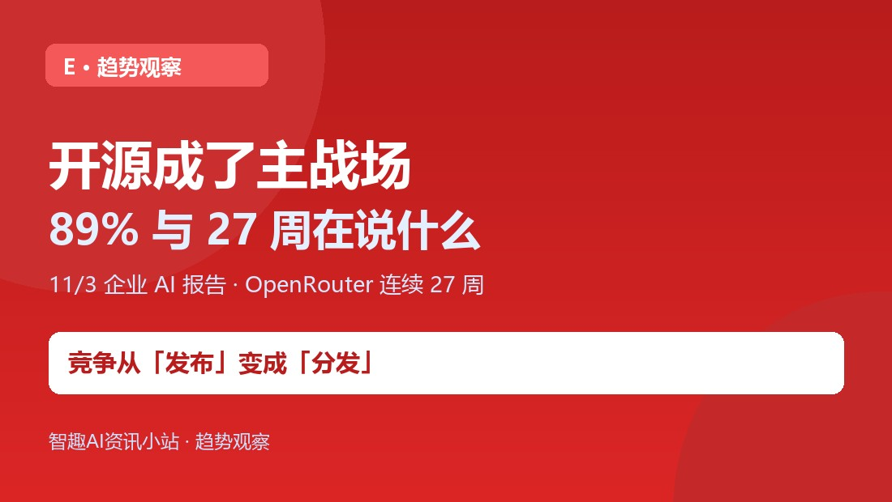
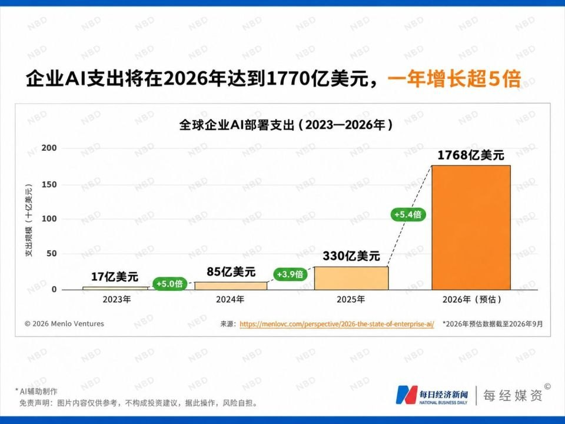
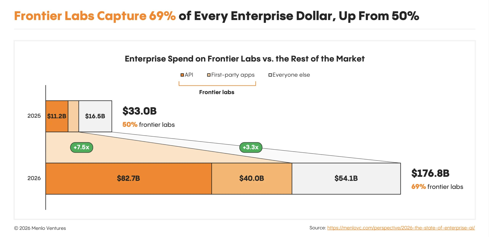
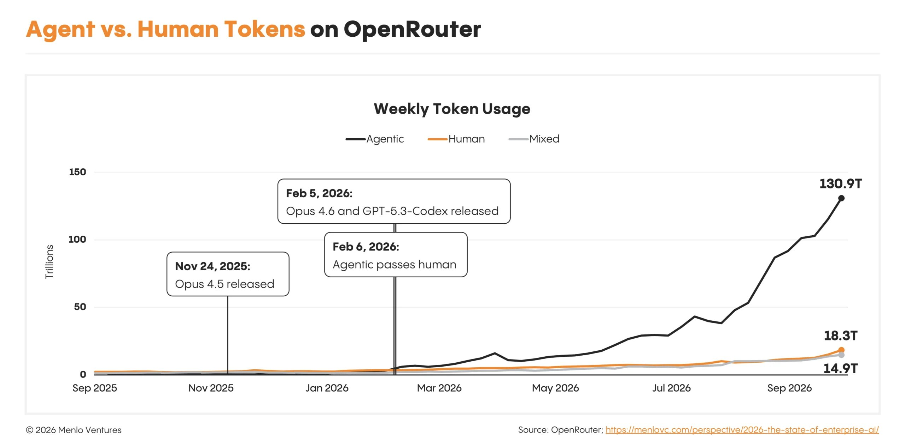

小智
AI 资讯站。只报真事，不制造焦虑。
长按识别二维码 · 关注不迷路
E · 趋势观察
89% 与 27 周：一个说付费选择，一个说持续使用，合起来是开源竞争格局在变。
这一轮的关键动作不是发更强的模型，而是把权重放进别人正在用的工作流。

11 月 3 日，硅谷风投 Menlo Ventures 发布《2026 年企业 AI 现状报告》：美国企业花在开源模型上的钱，89% 付给了中国模型——Kimi 占 61%、DeepSeek 15%、智谱 GLM 11%、通义千问 3%，而 Meta Llama 只有 7%。同一周，OpenRouter 上中国模型的 Token 调用量连续第 27 周超过美国模型，当周前五名里中国模型占四席。

这不是官方统计，而是一份企业支出调查：Morning Consult 在 2026 年 9 月 8—26 日访问近 400 位美国企业 AI 业务负责人，受访者负责的 AI 支出合计超过 40 亿美元。所以它量的是「已经付了钱的美国企业怎么选」，不是「全球谁用得多」，更不是技术排行榜。
报告的另一组数字也很扎眼：2023 年全球企业生成式 AI 部署支出年化 17 亿美元，到 2026 年 9 月已达 1768 亿美元；其中 69% 流向三家闭源模型公司。开源这一档里中国模型占 89%，但整个企业 AI 账单里闭源仍是大头——这两句要一起读。
因为「发布」同时变成了「分发」：
- 11/2 美团 LongCat-2.5（1.6 万亿参数、全程国产算力训练）开放 API；
- 11/4 腾讯 Hy4 宣布近期开源权重与系统卡片；
- 11/6—7 Kimi K3.1 Pro（2.8 万亿参数、100 万 token 上下文）放出权重，并登上微软 Azure AI Foundry 与英伟达 NIM；百度 ERNIE 5.5 Flash Base、蚂蚁 Ling-3.2-flash 同期开源；
- 乌镇峰会上，阿里披露魔搭已汇聚超 12 万款开源模型、累计开源 470 余款 Qwen。
也就是说，模型不只是放出来，而是进了云厂商目录、聚合平台和开发者工作流——这才是「主战场」三个字的实际含义。

报告给出一组容易被标题盖过的数字：开源模型平均调用价格已降到每百万 Token 约 0.13 美元（一年前约 0.45 美元），闭源约 0.70 美元；价格降了，用量涨了 22.5 倍，开源占平台 Token 总量约 19%。
另一条线是智能体：OpenRouter 上智能体已贡献约 80% 的 Token 使用量，约为人类直接使用的 7 倍；自今年 2 月智能体流量超过人类以来，其 Token 用量增长 37 倍。智能体会自己反复调模型，这让「便宜且可自部署」变成硬指标——开源模型最吃这一波红利。
- 支出份额 ≠ 调用量份额 ≠ 技术领先：89% 是「开源档的付费结构」，调查覆盖范围有限；
- 开源 ≠ 免费：企业付的是云上调用、托管与部署的钱，权重开放只是入场券；
- 这一周很热闹 ≠ 格局已定：Hy4 权重还没放，许可条款、系统卡片、合规边界都得等落地文本。
打开 OpenRouter 或你常用的模型聚合平台，看一眼自己最近一周的调用里，哪几个模型在真正干活、每个的单价是多少。把「谁在榜单上」换成「我的账单上是谁」，你会对这轮开源潮有更实在的判断。

事实依据
11/3 Menlo Ventures《2026 企业 AI 报告》：美企开源模型支出 89% 流向中国模型（Kimi 61%、DeepSeek 15%、GLM 11%）；企业 AI 部署支出 1768 亿美元，69% 归闭源三巨头；开源均价 0.13 美元/百万 Token（闭源 0.70），用量涨 22.5 倍。OpenRouter 中国模型 Token 调用量连续 27 周超美国。11/2—7 LongCat-2.5、Hy4、Kimi K3.1 Pro、ERNIE 5.5 密集发布或放权重；魔搭 12 万款开源模型。据 Menlo Ventures、环球网（2026.11）。
核查时间：2026 年 11 月 7 日。
TAKEAWAY
这一轮竞争的关键动作已经不是「发一个更强的模型」，而是把权重放进别人正在用的云目录、聚合平台和智能体工作流。89% 说的是付费选择，27 周说的是持续使用——但整个账单里闭源仍占大头，别把一档的领先读成全局胜利。
小智
AI 资讯站。只报真事，不制造焦虑。
长按识别二维码 · 关注不迷路
小智：把「谁在榜单上」换成「我的账单上是谁」，判断会更实在。